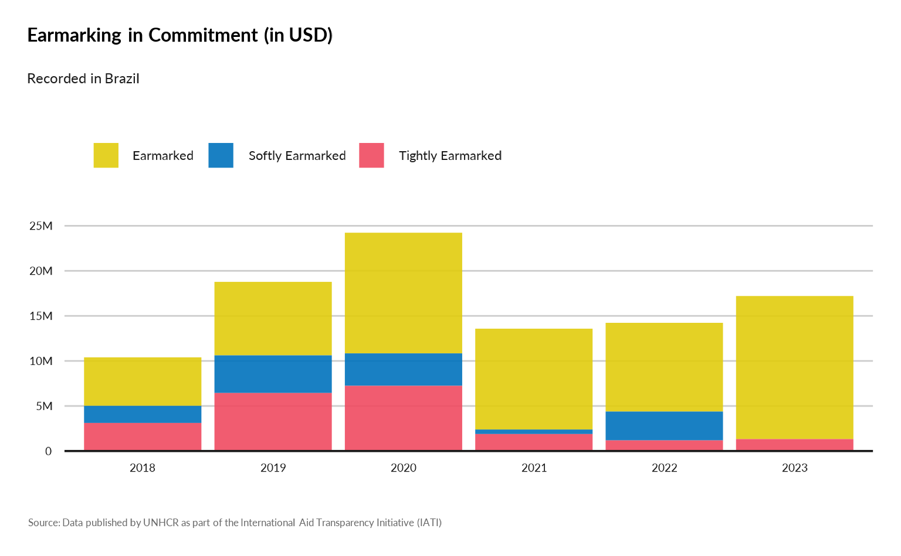
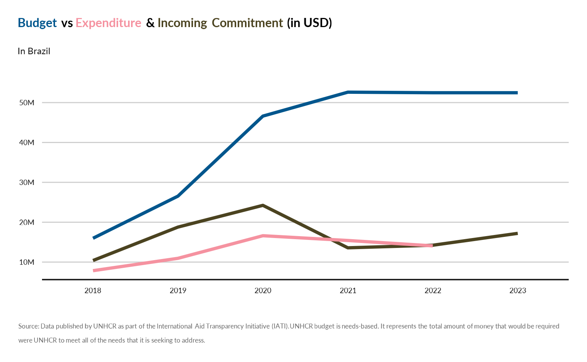
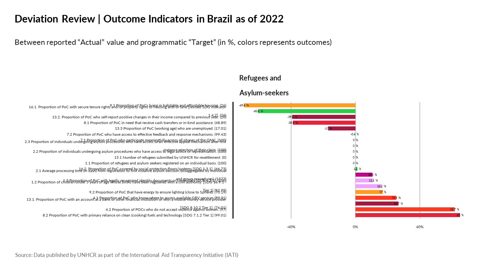

Using iati::dataTransaction
Show donors
- Who are the main donors by country in terms of number of projects and/or total budget?
| name | description |
|---|---|
| Incoming Funds | Funds recieved for use on the activity, which can be from an external or internal source. |
| Outgoing Commitment | A firm, written obligation from a donor or provider to provide a specified amount of funds, under particular terms and conditions, for specific purposes, for the benefit of the recipient. |
| Disbursement | Outgoing funds that are placed at the disposal of a recipient government or organisation, or funds transferred between two separately reported activities. |
| Expenditure | Outgoing funds that are spent on goods and services for the activity. |
| Interest Payment | The actual amount of interest paid on a loan or line of credit, including fees. |
| Loan Repayment | The actual amount of principal (amortisation) repaid, including any arrears. |
| Reimbursement | A type of disbursement that covers funds that have already been spent by the recipient, as agreed in the terms of the grant or loan |
| Purchase of Equity | Outgoing funds that are used to purchase equity in a business |
| Sale of Equity | Incoming funds from the sale of equity. |
| Credit Guarantee | A commitment made by a funding organisation to underwrite a loan or line of credit entered into by a third party. |
| Incoming Commitment | A firm, written obligation from a donor or provider to provide a specified amount of funds, under particular terms and conditions, reported by a recipient for this activity. |
| Outgoing Pledge | Indicative, non-binding advice of an intended outgoing commitment. |
| Incoming Pledge | Indicative, non-binding advice of an intended incoming commitment. |
show_donors(year = 2018,
programme_lab = "The Americas",
transaction_type_name = "Incoming Commitment" )
show_donors(year = 2018,
ctr_name = "Brazil",
transaction_type_name = "Incoming Commitment" )
show_donors(year = 2018,
programme_lab = "The Americas",
transaction_type_name = "Disbursement" )
show_donors(year = 2018,
programme_lab = "The Americas",
transaction_type_name = "Expenditure" )show_earmarking
- What’s the breakdown of Earmarking Type (Un-earmarked, Tightly earmarked, etc.) from Donor Funds by Year?
show_earmarking(year = 2018,
programme_lab = NULL,
iati_identifier_ops = NULL,
ctr_name = "Brazil")
Using iati::dataBudget
show_expenditure
- How much expenditures compare to the initial budget (weighted by # PoCs / GPP in the country)?
show_expenditure(year = 2018,
programme_lab = NULL,
iati_identifier_ops = NULL,
ctr_name = "Brazil")
Using iati::dataParticipating_org
Show partnership
- What’s the level of partnership between organisations when implementing projects?
show_partnership(year = 2022,
ctr_name = "Brazil" ) | participating_org_type_name | Funding | Implementing | Accountable |
|---|---|---|---|
| Government | Governmental donors of unearmarked and flexible funds, United States , Government of Cyprus , Government of Brazil | NULL | NULL |
| National NGO | Australia for UNHCR , España con ACNUR (Spain) , Fundación ACNUR Comité Argentino (Argentina), Japan for UNHCR , Sweden for UNHCR , Switzerland for UNHCR , UK for UNHCR , UNO-Flüchtlingshilfe (Germany) , USA for UNHCR | NULL | NULL |
| Other Public Sector | European Commission - Humanitarian Aid & Civil Protection, European Commission - International Partnerships | NULL | NULL |
| Multilateral | UN Women , International Organization for Migration (IOM) | United Nations High Commissioner for Refugees (UNHCR) | United Nations High Commissioner for Refugees (UNHCR) |
| Partner Country based NGO | NULL | Caritas Brasileira Regional Parana , Instituto MANA , ASAV Servico Jesuita a Migrantes e Refugiados , CARITAS ARQUIDIOCESANA DE MANAUS , Associacao Hermanitos , Pia Sociedade dos Missionários de São Carlos , Associacao Voluntarios Para o Servicio Internacional - BRASIL, CARITAS ARQUIDIOCESANA DE SAO PAULO, BRAZIL , INSTITUTO DE MIGRACOES E DIREITOS HUMANOS , I Know My Rights , CARITAS ARQUIDIOCESANA DE RIO DE JANEIRO, BRAZIL , A Casa - Museu De Artes e Artefatos Brasileiros , Associacao Compassiva , Instituto Internacional de Educacao do Brasil , Organizacao Fraternidade sem Fronteiras , Aldeias Infantis SOS Brasil | NULL |
| International NGO | NULL | ADVENTIST DEVELOPMENT AND RELIEF AGENCY, Panamerican Development Foundation | NULL |
| Private Sector | Private donors | NULL | NULL |
Using iati::dataSector
show_sectors
- What are the most funded sectors per country (Expenditure evolution per impact /outcome area)?
knitr::kable( iati::dataSector |>
dplyr::select( sector_vocabulary_name, sector_vocabulary_description) |>
dplyr::distinct())| sector_vocabulary_name | sector_vocabulary_description |
|---|---|
| Reporting Organisation | The sector reported corresponds to a sector vocabulary maintained by the reporting organisation for this activity |
| OECD DAC CRS Purpose Codes (5 digit) | The sector reported corresponds to an OECD DAC CRS 5-digit purpose code |
| Humanitarian Global Clusters (Inter-Agency Standing Committee) | The sector reported corresponds to an Inter-Agency Standard Committee Humanitarian Global Cluster code |
| Reporting Organisation 2 | The sector reported corresponds to a sector vocabulary maintained by the reporting organisation for this activity (if they are referencing more than one) |
| NA | NA |
show_sectors(year = 2018,
programme_lab = NULL,
iati_identifier_ops = NULL,
ctr_name = "Syria",
sector_vocabulary_name = "Reporting Organisation 2")
Using iati::dataResult
show_indicators
- How much indicators evolve over time against thresholds?
show_indicators(year = 2022,
programme_lab = NULL,
iati_identifier_ops = NULL,
ctr_name = "Brazil",
result_type_name = "Outcome"
)